Chapter 3: Biological Macromolecules¶
Introduction¶
Food provides the body with the nutrients it needs to survive. Many of these critical nutrients are biological macromolecules, or large molecules, necessary for life. Different smaller organic molecule (monomer) combinations build these macromolecules (polymers). What specific biological macromolecules do living things require? How do these molecules form? What functions do they serve? We explore these questions in this chapter.
3.1 Synthesis of Biological Macromolecules¶
Learning Objectives
By the end of this section, you will be able to do the following:
- Understand macromolecule synthesis
- Explain dehydration (or condensation) and hydrolysis reactions
As you’ve learned, biological macromolecules are large molecules, necessary for life, that are built from smaller organic molecules. There are four major biological macromolecule classes (carbohydrates, lipids, proteins, and nucleic acids). Each is an important cell component and performs a wide array of functions. Combined, these molecules make up the majority of a cell’s dry mass (recall that water makes up the majority of its complete mass). Biological macromolecules are organic, meaning they contain carbon and are bound to hydrogen, and may contain oxygen, nitrogen, and additional minor elements.
Dehydration Synthesis¶
Most macromolecules are made from single subunits, or building blocks, called monomers. The monomers combine with each other using covalent bonds to form larger molecules known as polymers. In doing so, monomers release water molecules as byproducts. This type of reaction is dehydration synthesis, which means “to put together while losing water.”
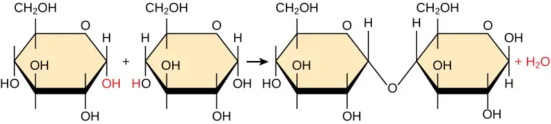
In a dehydration synthesis reaction (Figure 3.2), the hydrogen of one monomer combines with the hydroxyl group of another monomer, releasing a water molecule. At the same time, the monomers share electrons and form covalent bonds. As additional monomers join, this chain of repeating monomers forms a polymer. Different monomer types can combine in many configurations, giving rise to a diverse group of macromolecules. Even one kind of monomer can combine in a variety of ways to form several different polymers. For example, glucose monomers are the constituents of starch, glycogen, and cellulose.
Hydrolysis¶
Polymers break down into monomers during hydrolysis. A chemical reaction occurs when inserting a water molecule across the bond. Breaking a covalent bond with this water molecule in the compound achieves this (Figure 3.3). During these reactions, the polymer breaks into two components: one part gains a hydrogen atom (H+) and the other gains a hydroxyl molecule (OH–) from a split water molecule.
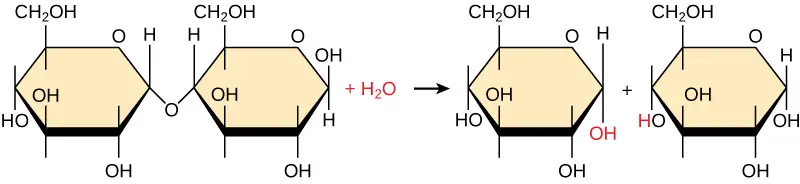
Dehydration and hydrolysis reactions are catalyzed, or “sped up,” by specific enzymes; dehydration reactions involve the formation of new bonds, requiring energy, while hydrolysis reactions break bonds and release energy. These reactions are similar for most macromolecules, but each monomer and polymer reaction is specific for its class. For example, catalytic enzymes in the digestive system hydrolyze or break down the food we ingest into smaller molecules. This allows cells in our body to easily absorb nutrients in the intestine. A specific enzyme breaks down each macromolecule. For instance, amylase, sucrase, lactase, or maltase break down carbohydrates. Enzymes called proteases, such as pepsin and peptidase, and hydrochloric acid break down proteins. Lipases break down lipids. These broken down macromolecules provide energy for cellular activities.
Interactive
Visit this site to see visual representations of dehydration synthesis and hydrolysis.
3.2 Carbohydrates¶
Learning Objectives
By the end of this section, you will be able to do the following:
- Discuss the role of carbohydrates in cells and in the extracellular materials of animals and plants
- Explain carbohydrate classifications
- List common monosaccharides, disaccharides, and polysaccharides
Most people are familiar with carbohydrates, one type of macromolecule, especially when it comes to what we eat. To lose weight, some individuals adhere to “low-carb” diets. Athletes, in contrast, often “carb-load” before important competitions to ensure that they have enough energy to compete at a high level. Carbohydrates are, in fact, an essential part of our diet. Grains, fruits, and vegetables are all natural carbohydrate sources that provide energy to the body, particularly through glucose, a simple sugar that is a component of starch and an ingredient in many staple foods. Carbohydrates also have other important functions in humans, animals, and plants.
Molecular Structures¶
The stoichiometric formula (CH2O)n, where n is the number of carbons in the molecule represents carbohydrates. In other words, the ratio of carbon to hydrogen to oxygen is 1:2:1 in carbohydrate molecules. This formula also explains the origin of the term “carbohydrate”: the components are carbon (“carbo”) and the components of water (hence, “hydrate”). Scientists classify carbohydrates into three subtypes: monosaccharides, disaccharides, and polysaccharides.
Monosaccharides¶
Monosaccharides (mono- = “one”; sacchar- = “sweet”) are simple sugars, the most common of which is glucose. In monosaccharides, the number of carbons usually ranges from three to seven. Most monosaccharide names end with the suffix -ose. If the sugar has an aldehyde group (the functional group with the structure R-CHO), it is an aldose, and if it has a ketone group (the functional group with the structure RC(=O)R'), it is a ketose. Depending on the number of carbons in the sugar, they can be trioses (three carbons), pentoses (five carbons), and/or hexoses (six carbons). Figure 3.4 illustrates monosaccharides.
![The molecular structures of glyceraldehyde, an aldose, and dihydroxyacetone, a ketose, are shown. Both sugars have a three-carbon backbone. Glyceraldehyde has a carbonyl group (c double bonded to O) at one end of the carbon chain with hydroxyl (OH) groups attached to the other carbons. Dihydroxyacetone has a carbonyl group in the middle of the chain and alcohol groups at each end. The molecular structures of linear forms of ribose, a pentose, and glucose, a hexose, are also shown. Both ribose and glucose are aldoses with a carbonyl group at the end of chain,and hydroxyl groups attached to the other carbons.](img/figure-03-02-01-40f7.webp)
The chemical formula for glucose is C6H12O6. In humans, glucose is an important source of energy. During cellular respiration, energy releases from glucose, and that energy helps make adenosine triphosphate (ATP). Plants synthesize glucose using carbon dioxide and water, and glucose in turn provides energy requirements for the plant. Humans and other animals that feed on plants often obtain glucose from catabolized (cell breakdown of larger molecules) starch.
Galactose (part of lactose, or milk sugar) and fructose (found in sucrose, in fruit) are other common monosaccharides. Although glucose, galactose, and fructose all have the same chemical formula (C6H12O6), they differ structurally and chemically (and are isomers) because of the different arrangement of functional groups around the asymmetric carbon. All these monosaccharides have more than one asymmetric carbon (Figure 3.5).
Visual Connection
![The molecular structures of the linear forms of glucose, galactose, and fructose are shown. Glucose and galactose are both aldoses with a carbonyl group (carbon double-bonded to oxygen) at one end of the molecule. A hydroxyl (OH) group is attached to each of the other residues. In glucose, the hydroxyl group attached to the third carbon is on the left side of the molecular structure and all other hydroxyl groups are on the right. In galactose, the hydroxyl groups attached to the third and fourth carbons are on the left, and the hydroxyl groups attached to the second, fifth and sixth carbon are on the right. Fructose is a ketose with C doubled bonded to O at the second carbon. All other carbons have hydroxyl groups associated with them. The hydroxyl group associated with the third carbon is on the left, and all the other hydroxyl groups are on the right.](img/figure-03-02-02.webp)
What kind of sugars are these, aldose or ketose?
Glucose, galactose, and fructose are isomeric monosaccharides (hexoses), meaning they have the same chemical formula but have slightly different structures. Glucose and galactose are aldoses, and fructose is a ketose.
Monosaccharides can exist as a linear chain or as ring-shaped molecules. In aqueous solutions they are usually in ring forms (Figure 3.6). Glucose in a ring form can have two different hydroxyl group arrangements (OH) around the anomeric carbon (carbon 1 that becomes asymmetric in the ring formation process). If the hydroxyl group is below carbon number 1 in the sugar, it is in the alpha (α) position, and if it is above the plane, it is in the beta (β) position.
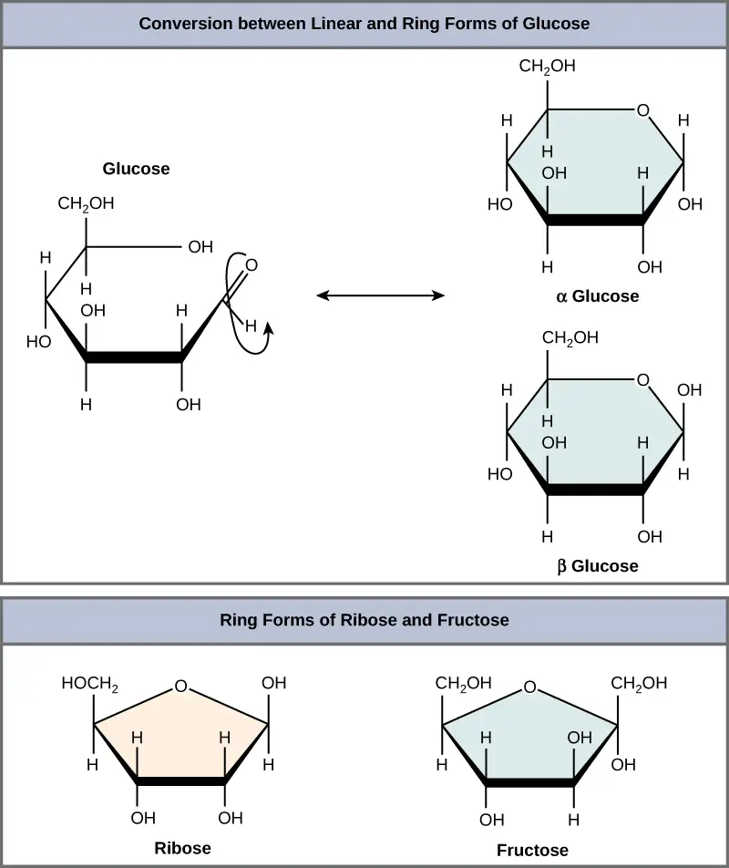
Disaccharides¶
Disaccharides (di- = “two”) form when two monosaccharides undergo a dehydration reaction (or a condensation reaction or dehydration synthesis). During this process, one monosaccharide's hydroxyl group combines with another monosaccharide's hydrogen, releasing a water molecule and forming a covalent bond. A covalent bond forms between a carbohydrate molecule and another molecule (in this case, between two monosaccharides). Scientists call this a glycosidic bond (Figure 3.7). Glycosidic bonds (or glycosidic linkages) can be an alpha or beta type. An alpha bond is formed when the OH group on the carbon-1 of the first glucose is below the ring plane, and a beta bond is formed when the OH group on the carbon-1 is above the ring plane.
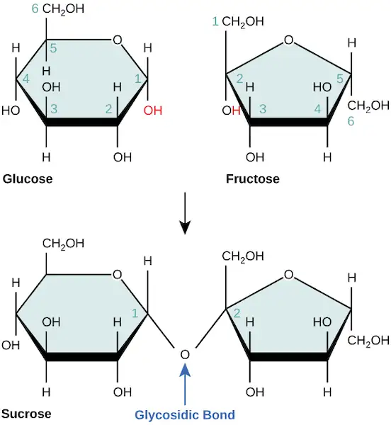
Common disaccharides include lactose, maltose, and sucrose (Figure 3.8). Lactose is a disaccharide consisting of the monomers glucose and galactose. It is naturally in milk. Maltose, or malt sugar, is a disaccharide formed by a dehydration reaction between two glucose molecules. The most common disaccharide is sucrose, or table sugar, which is comprised of glucose and fructose monomers.
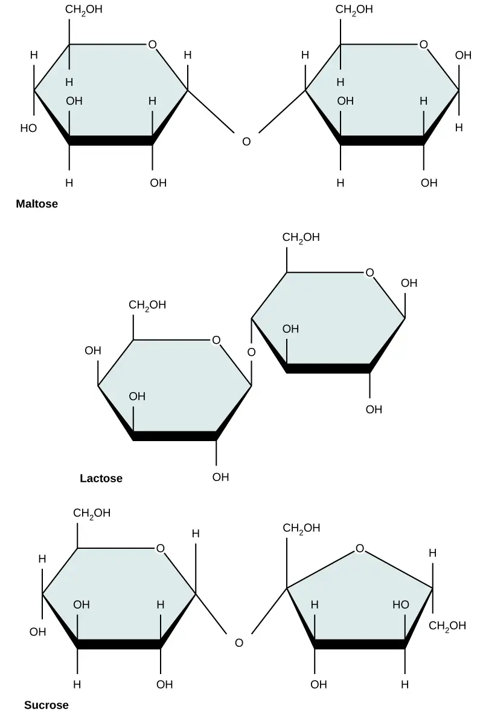
Polysaccharides¶
A long chain of monosaccharides linked by glycosidic bonds is a polysaccharide (poly- = “many”). The chain may be branched or unbranched, and it may contain different types of monosaccharides. The molecular weight may be 100,000 daltons or more depending on the number of joined monomers. Starch, glycogen, cellulose, and chitin are primary examples of polysaccharides.
Plants store sugars in the form of starch. In plants, an amylose and amylopectin mixture (both glucose polymers) comprise these sugars. Plants are able to synthesize glucose, and they store the excess glucose, beyond their immediate energy needs, as starch in different plant parts, including roots and seeds. The starch in the seeds provides food for the embryo as it germinates and can also act as a food source for humans and animals. Enzymes break down the starch that humans consume. For example, an amylase present in saliva catalyzes, or breaks down this starch into smaller molecules, such as maltose and glucose. The cells can then absorb the glucose.
Glucose starch comprises monomers that are joined by α 1-4 or α 1-6 glycosidic bonds. The numbers 1-4 and 1-6 refer to the carbon number of the two residues that have joined to form the bond. As Figure 3.9 illustrates, unbranched glucose monomer chains (only α 1-4 linkages) form the starch; whereas, amylopectin is a branched polysaccharide (α 1-6 linkages at the branch points).
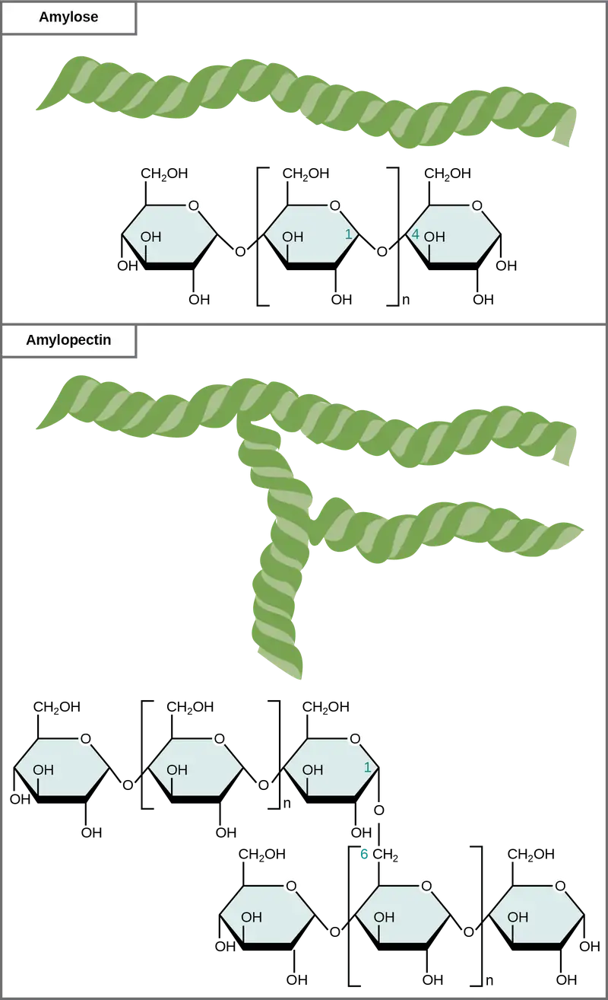
Glycogen is the storage form of glucose in humans and other vertebrates and is comprised of monomers of glucose. Glycogen is the animal equivalent of starch and is a highly branched molecule usually stored in liver and muscle cells. Whenever blood glucose levels decrease, glycogen breaks down to release glucose in a process scientists call glycogenolysis.
Cellulose is the most abundant natural biopolymer. Cellulose mostly comprises a plant's cell wall. This provides the cell structural support. Wood and paper are mostly cellulosic in nature. Glucose monomers comprise cellulose that β 1-4 glycosidic bonds link (Figure 3.10).
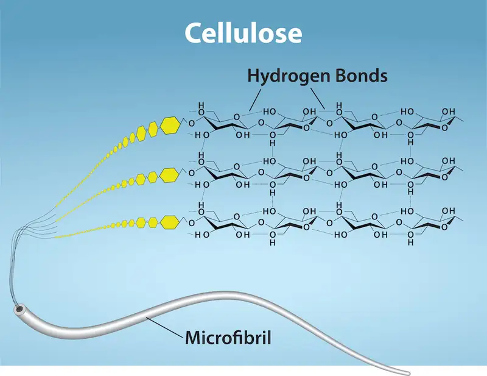
As Figure 3.10 shows, every other glucose monomer in cellulose is flipped over, and the monomers are packed tightly as extended long chains. This gives cellulose its rigidity and high tensile strength—which is so important to plant cells. While human digestive enzymes cannot break down the β 1-4 linkage, herbivores such as cows, koalas, and buffalos are able, with the help of the specialized flora in their stomach, to digest plant material that is rich in cellulose and use it as a food source. In some of these animals, certain species of bacteria and protists reside in the rumen (part of the herbivore's digestive system) and secrete the enzyme cellulase. The appendix of grazing animals also contains bacteria that digest cellulose, giving it an important role in ruminants' digestive systems. Cellulases can break down cellulose into glucose monomers that animals use as an energy source. Termites are also able to break down cellulose because of the presence of other organisms in their bodies that secrete cellulases.
Carbohydrates serve various functions in different animals. Arthropods (insects, crustaceans, and others) have an outer skeleton, the exoskeleton, which protects their internal body parts (as we see in the bee in Figure 3.11). This exoskeleton is made of the biological macromolecule chitin, which is a nitrogen-containing polysaccharide. It is made of repeating N-acetyl-β-d-glucosamine units, which are a modified sugar. Chitin is also a major component of fungal cell walls. Fungi are neither animals nor plants and form a kingdom of their own in the domain Eukarya.
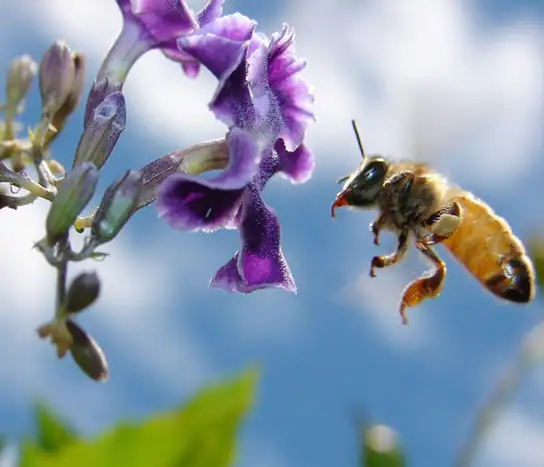
Career Connection: Registered Dietitian
Nutrition is a worldwide health concern, and many diseases, such as diabetes and heart disease, are becoming more prevalent. This is one of the reasons why people increasingly seek out registered dietitians for advice. Registered dietitians help plan nutrition programs for individuals in various settings. They often work with patients in health care facilities, designing nutrition plans to treat and prevent diseases. For example, dietitians may teach a patient with diabetes how to manage blood sugar levels by eating the correct types and amounts of carbohydrates. Dietitians may also work in nursing homes, schools, and private practices.
To become a registered dietitian, one needs to earn at least a bachelor’s degree in dietetics, nutrition, food technology, or a related field. In addition, registered dietitians must complete a supervised internship program and pass a national exam. Those who pursue careers in dietetics take courses in nutrition, chemistry, biochemistry, biology, microbiology, and human physiology. Dietitians must become experts in the chemistry and physiology (biological functions) of food (proteins, carbohydrates, and fats).
Benefits of Carbohydrates¶
Are carbohydrates good for you? Some people believe that carbohydrates are bad and they should avoid them. Some diets completely forbid carbohydrate consumption, claiming that a low-carbohydrate diet helps people to lose weight faster. However, carbohydrates have been an important part of the human diet for thousands of years. Artifacts from ancient civilizations show the presence of wheat, rice, and corn in our ancestors’ storage areas.
As part of a well balanced diet, we should supplement carbohydrates with proteins, vitamins, and fats. Calorie-wise, a gram of carbohydrate provides 4.3 Kcal. For comparison, fats provide 9 Kcal/g, a less desirable ratio. Carbohydrates contain soluble and insoluble elements. The insoluble part, fiber, is mostly cellulose. Fiber has many uses. It promotes regular bowel movement by adding bulk, and it regulates the blood glucose consumption rate. Fiber also helps to remove excess cholesterol from the body. Fiber binds to the cholesterol in the small intestine, then attaches to the cholesterol and prevents the cholesterol particles from entering the bloodstream. Cholesterol then exits the body via the feces. Fiber-rich diets also have a protective role in reducing the occurrence of colon cancer. In addition, a meal containing whole grains and vegetables gives a feeling of fullness. As an immediate source of energy, glucose breaks down during the cellular respiration process, which produces ATP, the cell's energy currency. Without consuming carbohydrates, we reduce the availability of “instant energy”. Eliminating carbohydrates from the diet may be necessary for some people, but such a step may not be healthy for everyone.
Interactive
For an additional perspective on carbohydrates, explore “Biomolecules: the Carbohydrates” through this interactive animation.
3.3 Lipids¶
Learning Objectives
By the end of this section, you will be able to do the following:
- Describe the four major types of lipids
- Explain the role of fats in storing energy
- Differentiate between saturated and unsaturated fatty acids
- Describe phospholipids and their role in cells
- Define the basic structure of a steroid and some steroid functions
- Explain how cholesterol helps maintain the plasma membrane's fluid nature
Lipids include a diverse group of compounds that are largely nonpolar in nature. This is because they are hydrocarbons that include mostly nonpolar carbon–carbon or carbon–hydrogen bonds. Non-polar molecules are hydrophobic (“water fearing”), or insoluble in water. Lipids perform many different functions in a cell. Cells store energy for long-term use in the form of fats. Lipids also provide insulation from the environment for plants and animals (Figure 3.12). For example, they help keep aquatic birds and mammals dry when forming a protective layer over fur or feathers because of their water-repellent hydrophobic nature. Lipids are also the building blocks of many hormones and are an important constituent of all cellular membranes. Lipids include fats, oils, waxes, phospholipids, and steroids.
Fats and Oils¶
A fat molecule consists of two main components—glycerol and fatty acids. Glycerol is an organic compound (alcohol) with three carbons, five hydrogens, and three hydroxyl (OH) groups. Fatty acids have a long chain of hydrocarbons to which a carboxyl group is attached, hence the name “fatty acid.” The number of carbons in the fatty acid may range from 4 to 36. The most common are those containing 12–18 carbons. In a fat molecule, the fatty acids attach to each of the glycerol molecule's three carbons with an ester bond through an oxygen atom (Figure 3.13).
![The structures of glycerol, a fatty acid, and a triacylglycerol are shown. Glycerol is a chain of three carbons, with a hydroxyl (upper O upper H) group attached to each carbon. A fatty acid has an acetyl (upper C upper O upper O upper H) group attached to a long carbon chain. In triacylglycerol, a fatty acid is attached to each of glycerols three hydroxyl groups via the carboxyl group. A water molecule is lost in the reaction so the structure of the linkage is C dash O dash C, with an oxygen double bonded to the second carbon.](img/figure-03-03-02-f094.webp)
During this ester bond formation, three water molecules are released. The three fatty acids in the triacylglycerol may be similar or dissimilar. We also call fats triacylglycerols or triglycerides because of their chemical structure. Some fatty acids have common names that specify their origin. For example, palmitic acid, a saturated fatty acid, is derived from the palm tree. Arachidic acid is derived from Arachis hypogea, the scientific name for groundnuts or peanuts.
Fatty acids may be saturated or unsaturated. In a fatty acid chain, if there are only single bonds between neighboring carbons in the hydrocarbon chain, the fatty acid is saturated. Saturated fatty acids are saturated with hydrogen. In other words, the number of hydrogen atoms attached to the carbon skeleton is maximized. Stearic acid is an example of a saturated fatty acid (Figure 3.14).
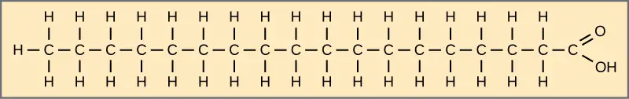
When the hydrocarbon chain contains a double bond, the fatty acid is unsaturated. Oleic acid is an example of an unsaturated fatty acid (Figure 3.15).
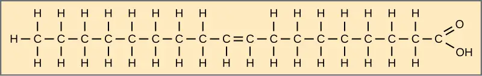
Most unsaturated fats are liquid at room temperature. We call these oils. If there is one double bond in the molecule, then it is a monounsaturated fat (e.g., olive oil), and if there is more than one double bond, then it is a polyunsaturated fat (e.g., canola oil).
When a fatty acid has no double bonds, it is a saturated fatty acid because it is not possible to add more hydrogen to the chain's carbon atoms. A fat may contain similar or different fatty acids attached to glycerol. Long straight fatty acids with single bonds generally pack tightly and are solid at room temperature. Animal fats with stearic acid and palmitic acid (common in meat) and the fat with butyric acid (common in butter) are examples of saturated fats. Mammals store fats in specialized cells, or adipocytes, where fat globules occupy most of the cell’s volume. Plants store fat or oil in many seeds and use them as a source of energy during seedling development. Unsaturated fats or oils are usually of plant origin and contain cis unsaturated fatty acids. Cis and trans indicate the configuration of the molecule around the double bond. If hydrogens are present in the same plane, it is a cis fat. If the hydrogen atoms are on two different planes, it is a trans fat. The cis double bond causes a bend or a “kink” that prevents the fatty acids from packing tightly, keeping them liquid at room temperature (Figure 3.16). Olive oil, corn oil, canola oil, and cod liver oil are examples of unsaturated fats. Unsaturated fats help to lower blood cholesterol levels; whereas, saturated fats might contribute to plaque formation in the arteries.
![A comparison of saturated and unsaturated fatty acids is shown. Stearic acid, a saturated fatty acid, has a hydrocarbon chain seventeen residues long attached to an acetyl group. Oleic acid also has a seventeen-residue hydrocarbon chain, but a double bond exists between the eighth and ninth carbon in the chain. In cis oleic acid, the hydrogens are on the same side of the double bond. In the cis oleic acid, the 2 hydrogens on the same side cause the chain to bend. In trans oleic acid, they are on opposite sides.](img/figure-03-03-05-ff6c.webp)
Trans Fats¶
The food industry artificially hydrogenates oils to make them semi-solid and of a consistency desirable for many processed food products. Simply speaking, hydrogen gas is bubbled through oils to solidify them. During this hydrogenation process, double bonds of the cis- conformation in the hydrocarbon chain may convert to double bonds in the trans- conformation.
Margarine, some types of peanut butter, and shortening are examples of artificially hydrogenated trans fats. Recent studies have shown that an increase in trans fats in the human diet may lead to higher levels of low-density lipoproteins (LDL), or “bad” cholesterol, which in turn may lead to plaque deposition in the arteries, resulting in heart disease. Many fast food restaurants have recently banned using trans fats, and food labels are required to display the trans fat content.
Omega Fatty Acids¶
Essential fatty acids are those that the human body requires but does not synthesize. Consequently, they have to be supplemented through ingestion via the diet. Omega-3 fatty acids (like those in Figure 3.17) fall into this category and are one of only two known for humans (the other is omega-6 fatty acid). These are polyunsaturated fatty acids and are omega-3 because a double bond connects the third carbon from the hydrocarbon chain's end to its neighboring carbon.
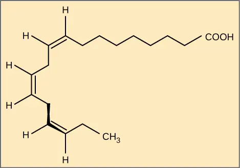
The farthest carbon away from the carboxyl group is numbered as the omega (ω) carbon, and if the double bond is between the third and fourth carbon from that end, it is an omega-3 fatty acid. Nutritionally important because the body does not make them, omega-3 fatty acids include alpha-linoleic acid (ALA), eicosapentaenoic acid (EPA), and docosahexaenoic acid (DHA), all of which are polyunsaturated. Salmon, trout, and tuna are good sources of omega-3 fatty acids. Research indicates that omega-3 fatty acids reduce the risk of sudden death from heart attacks, lower triglycerides in the blood, decrease blood pressure, and prevent thrombosis by inhibiting blood clotting. They also reduce inflammation, and may help lower the risk of some cancers in animals.
Like carbohydrates, fats have received considerable bad publicity. It is true that eating an excess of fried foods and other “fatty” foods leads to weight gain. However, fats do have important functions. Many vitamins are fat soluble, and fats serve as a long-term storage form of fatty acids: a source of energy. They also provide insulation for the body. Therefore, we should consume “healthy” fats in moderate amounts on a regular basis.
Waxes¶
Wax covers some aquatic birds' feathers and some plants' leaf surfaces. Because of waxes' hydrophobic nature, they prevent water from sticking on the surface (Figure 3.18). Long fatty acid chains esterified to long-chain alcohols comprise waxes.
Phospholipids¶
Phospholipids are major plasma membrane constituents that comprise cells' outermost layer. Like fats, they are comprised of fatty acid chains attached to a glycerol or sphingosine backbone. However, instead of three fatty acids attached as in triglycerides, there are two fatty acids forming diacylglycerol, and a modified phosphate group occupies the glycerol backbone's third carbon (Figure 3.19). A phosphate group alone attached to a diacylglycerol does not qualify as a phospholipid. It is phosphatidate (diacylglycerol 3-phosphate), the precursor of phospholipids. An alcohol modifies the phosphate group. Phosphatidylcholine and phosphatidylserine are two important phospholipids that are in plasma membranes.
![The molecular structure of a phospholipid is shown. It consists of two fatty acids attached to the first and second carbons in glycerol, and a phosphate group attached to the third position. In the illustration one of the fatty acids is saturated and straight, and the second is unsaturated and bent. Both are below the glycerol molecule. The phosphate group may be further modified by addition of another molecule to one of its oxygens indicated by upper-case R. Two molecules may modify the phosphate group, choline and serine. The glycerol and phosphate group make up the hydrophilic head of the molecule, while the fatty acids attached below make up the hydrophobic tails.](img/figure-03-03-08.webp)
A phospholipid is an amphipathic molecule, meaning it has a hydrophobic and a hydrophilic part. The fatty acid chains are hydrophobic and cannot interact with water; whereas, the phosphate-containing group is hydrophilic and interacts with water (Figure 3.20).
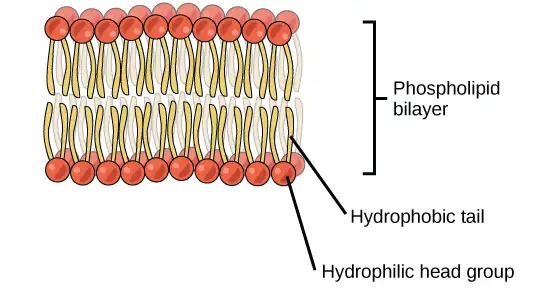
The head is the hydrophilic part, and the tail contains the hydrophobic fatty acids. In a membrane, a bilayer of phospholipids forms the structure's matrix, phospholipids' fatty acid tails face inside, away from water; whereas, the phosphate group faces the outside, aqueous side (Figure 3.20).
Phospholipids are responsible for the plasma membrane's dynamic nature. If a drop of phospholipids is placed in water, it spontaneously forms a structure that scientists call a micelle, where the hydrophilic phosphate heads face the outside and the fatty acids face the structure's interior.
Steroids¶
Unlike the phospholipids and fats that we discussed earlier, steroids have a fused ring structure. Although they do not resemble the other lipids, scientists group them with them because they are also hydrophobic and insoluble in water. All steroids have four linked carbon rings and several of them, like cholesterol, have a short tail (Figure 3.21). Many steroids also have the –OH functional group, which puts them in the alcohol classification (sterols).
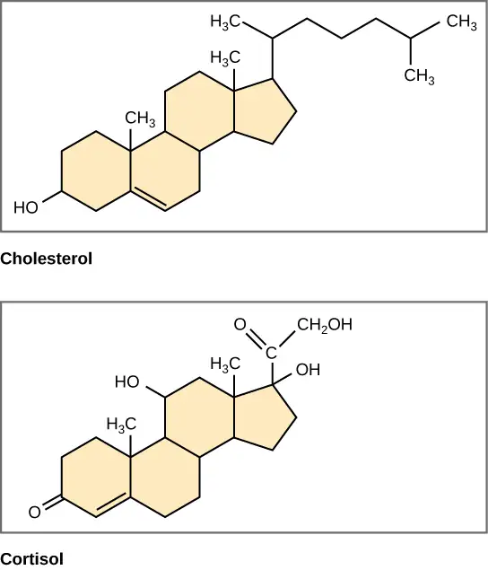
Cholesterol is the most common steroid. The liver synthesizes cholesterol and is the precursor to many steroid hormones such as testosterone and estradiol, which gonads and endocrine glands secrete. It is also the precursor to Vitamin D. Cholesterol is also the precursor of bile salts, which help emulsifying fats and their subsequent absorption by cells. Although lay people often speak negatively about cholesterol, it is necessary for the body's proper functioning. Sterols (cholesterol in animal cells, phytosterol in plants) are components of the plasma membrane of cells and are found within the phospholipid bilayer.
Interactive
For an additional perspective on lipids, watch this video about types of fat.
3.4 Proteins¶
Learning Objectives
By the end of this section, you will be able to do the following:
- Describe the functions proteins perform in the cell and in tissues
- Discuss the relationship between amino acids and proteins
- Explain the four levels of protein organization
- Describe the ways in which protein shape and function are linked
Proteins are one of the most abundant organic molecules in living systems and have the most diverse range of functions of all macromolecules. Proteins may be structural, regulatory, contractile, or protective. They may serve in transport, storage, or membranes; or they may be toxins or enzymes. Each cell in a living system may contain thousands of proteins, each with a unique function. Their structures, like their functions, vary greatly. They are all, however, amino acid polymers arranged in a linear sequence.
Types and Functions of Proteins¶
Enzymes, which living cells produce, are catalysts in biochemical reactions (like digestion) and are usually complex or conjugated proteins. Each enzyme is specific for the substrate (a reactant that binds to an enzyme) upon which it acts. The enzyme may help in breakdown, rearrangement, or synthesis reactions. We call enzymes that break down their substrates catabolic enzymes. Those that build more complex molecules from their substrates are anabolic enzymes, and enzymes that affect the rate of reaction are catalytic enzymes. Note that all enzymes increase the reaction rate and, therefore, are organic catalysts. An example of an enzyme is salivary amylase, which hydrolyzes its substrate amylose, a component of starch.
Hormones are chemical-signaling molecules, usually small proteins or steroids, secreted by endocrine cells that act to control or regulate specific physiological processes, including growth, development, metabolism, and reproduction. For example, insulin is a protein hormone that helps regulate the blood glucose level. Table 3.1 lists the primary types and functions of proteins.
Table 3.1
| Protein Types and Functions | ||
|---|---|---|
| Type | Examples | Functions |
| Digestive Enzymes | Amylase, lipase, pepsin, trypsin | Help in food by catabolizing nutrients into monomeric units |
| Transport | Hemoglobin, albumin | Carry substances in the blood or lymph throughout the body |
| Structural | Actin, tubulin, keratin | Construct different structures, like the cytoskeleton |
| Hormones | Insulin, thyroxine | Coordinate different body systems' activity |
| Defense | Immunoglobulins | Protect the body from foreign pathogens |
| Contractile | Actin, myosin | Effect muscle contraction |
| Storage | Legume storage proteins, egg white (albumin) | Provide nourishment in early embryo development and the seedling |
Proteins have different shapes and molecular weights. Some proteins are globular in shape; whereas, others are fibrous in nature. For example, hemoglobin is a globular protein, but collagen, located in our skin, is a fibrous protein. Protein shape is critical to its function, and many different types of chemical bonds maintain this shape. Changes in temperature, pH, and exposure to chemicals may lead to permanent changes in the protein's shape, leading to loss of function, or denaturation. Different arrangements of the same 20 types of amino acids comprise all proteins. Two rare new amino acids were discovered recently (selenocysteine and pyrrolysine), and additional new discoveries may be added to the list.
Amino Acids¶
Amino acids are the monomers that comprise proteins. Each amino acid has the same fundamental structure, which consists of a central carbon atom, or the alpha (α) carbon, bonded to an amino group (NH2), a carboxyl group (COOH), and to a hydrogen atom. Every amino acid also has another atom or group of atoms bonded to the central atom known as the R group (Figure 3.22).
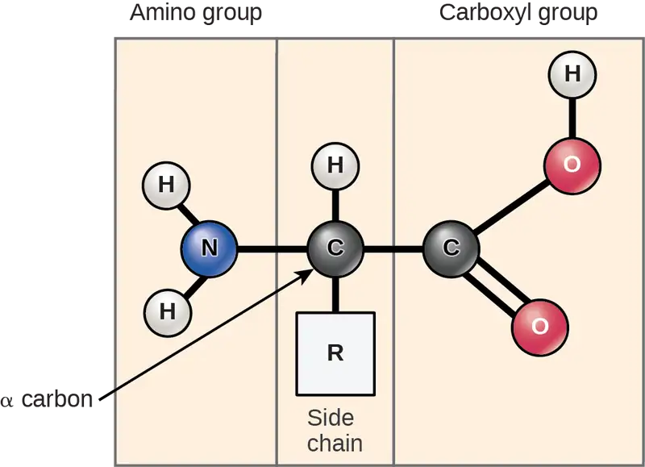
Scientists use the name "amino acid" because these acids contain both amino group and carboxyl-acid-group in their basic structure. As we mentioned, there are 20 common amino acids present in proteins. Nine of these are essential amino acids in humans because the human body cannot produce them and we obtain them from our diet. For each amino acid, the R group (or side chain) is different (Figure 3.23).
Visual Connection
![The molecular structures of the twenty amino acids commonly found in proteins are given. These are divided into five categories: nonpolar aliphatic, polar uncharged, positively charged, negatively charged, and aromatic. Nonpolar aliphatic amino acids include glycine, alanine, valine, leucine, methionine, isoleucine, and proline. Polar uncharged amino acids include serine, threonine, cysteine, asparagine, and glutamine. Positively charged amino acids include lysine, arginine, and histidine. Negatively charged amino acids include aspartate and glutamate. Aromatic amino acids include phenylalanine, tyrosine, and tryptophan. For example, in the amino acid glycine, the R group is a single hydrogen; but in alanine the R group is upper C upper H subscript 3 baseline.](img/figure-03-04-02-fd30.webp)
Which categories of amino acid would you expect to find on a soluble protein's surface and which would you expect to find in the interior? What distribution of amino acids would you expect to find in a protein embedded in a lipid bilayer?
The chemical nature of the side chain determines the amino acid's nature (that is, whether it is acidic, basic, polar, or nonpolar). For example, the amino acid glycine has a hydrogen atom as the R group. Amino acids such as valine, methionine, and alanine are nonpolar or hydrophobic in nature, while amino acids such as serine, threonine, and cysteine are polar and have hydrophilic side chains. The side chains of lysine and arginine are positively charged, and therefore these amino acids are also basic amino acids. Proline has an R group that is linked to the amino group, forming a ring-like structure. Proline is an exception to the amino acid's standard structure since its amino group is not separate from the side chain (Figure 3.23).
A single upper case letter or a three-letter abbreviation represents amino acids. For example, the letter V or the three-letter symbol val represent valine. Just as some fatty acids are essential to a diet, some amino acids also are necessary. These essential amino acids in humans include isoleucine, leucine, and cysteine. Essential amino acids refer to those necessary to build proteins in the body, but not those that the body produces. Which amino acids are essential varies from organism to organism.
The sequence and the number of amino acids ultimately determine the protein's shape, size, and function. A covalent bond, or peptide bond, attaches to each amino acid, which a dehydration reaction forms. One amino acid's carboxyl group and the incoming amino acid's amino group combine, releasing a water molecule. The resulting bond is the peptide bond (Figure 3.24).
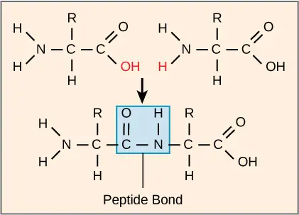
The products that such linkages form are peptides. As more amino acids join to this growing chain, the resulting chain is a polypeptide. Each polypeptide has a free amino group at one end. This end is called the N terminal, or the amino terminal, and the other end has a free carboxyl group, also called the C or carboxyl terminal. While the terms polypeptide and protein are sometimes used interchangeably, a polypeptide is technically a polymer of amino acids, whereas the term protein is used for a polypeptide or polypeptides that have combined together, often have bound non-peptide prosthetic groups, have a distinct shape, and have a unique function. After protein synthesis (translation), most proteins are modified. These are known as post-translational modifications. They may undergo cleavage, phosphorylation, or may require adding other chemical groups. Only after these modifications is the protein completely functional.
Interactive
Click through the steps of protein synthesis in this interactive tutorial.
Evolution Connection: The Evolutionary Significance of Cytochrome c
Cytochrome c is an important component of the electron transport chain, a part of cellular respiration, and it is normally located in the cellular organelle, the mitochondrion. This protein has a heme prosthetic group, and the heme's central ion alternately reduces and oxidizes during electron transfer. Because this essential protein’s role in producing cellular energy is crucial, it has changed very little over millions of years. Protein sequencing has shown that there is a considerable amount of cytochrome c amino acid sequence homology among different species. In other words, we can assess evolutionary kinship by measuring the similarities or differences among various species’ DNA or protein sequences.
Scientists have determined that human cytochrome c contains 104 amino acids. For each cytochrome c molecule from different organisms that scientists have sequenced to date, 37 of these amino acids appear in the same position in all cytochrome c samples. This indicates that there may have been a common ancestor. On comparing the human and chimpanzee protein sequences, scientists did not find a sequence difference. When researchers compared human and rhesus monkey sequences, the single difference was in one amino acid. In another comparison, human to yeast sequencing shows a difference in the 44th position.
Protein Structure¶
As we discussed earlier, a protein's shape is critical to its function. For example, an enzyme can bind to a specific substrate at an active site. If this active site is altered because of local changes or changes in overall protein structure, the enzyme may be unable to bind to the substrate. To understand how the protein gets its final shape or conformation, we need to understand the four levels of protein structure: primary, secondary, tertiary, and quaternary.
Primary Structure¶
Amino acids' unique sequence in a polypeptide chain is its primary structure. For example, the pancreatic hormone insulin has two polypeptide chains, A and B, and they are linked together by disulfide bonds. The N terminal amino acid of the A chain is glycine; whereas, the C terminal amino acid is asparagine (Figure 3.25). The amino acid sequences in the A and B chains are unique to insulin.
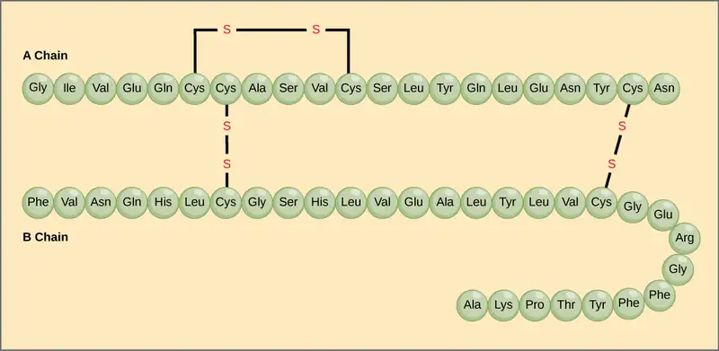
The gene encoding the protein ultimately determines the unique sequence for every protein. A change in nucleotide sequence of the gene’s coding region may lead to adding a different amino acid to the growing polypeptide chain, causing a change in protein structure and function. In sickle cell anemia, the hemoglobin β chain (a small portion of which we show in Figure 3.26) has a single amino acid substitution, causing a change in protein structure and function. Specifically, valine in the β chain substitutes the amino acid glutamic. What is most remarkable to consider is that a hemoglobin molecule is comprised of two alpha and two beta chains that each consist of about 150 amino acids. The molecule, therefore, has about 600 amino acids. The structural difference between a normal hemoglobin molecule and a sickle cell molecule—which dramatically decreases life expectancy—is a single amino acid of the 600. What is even more remarkable is that three nucleotides each encode those 600 amino acids, and a single base change (point mutation), 1 in 1800 bases causes the mutation.
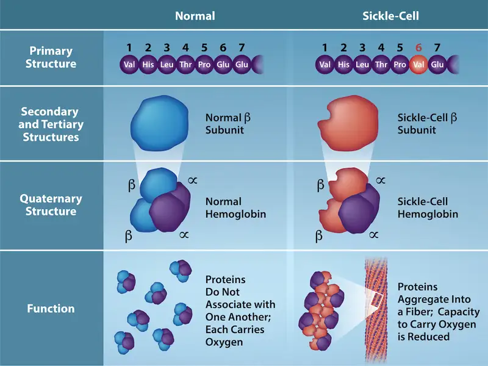
Because of this change of one amino acid in the chain, hemoglobin molecules form long fibers that distort the biconcave, or disc-shaped, red blood cells and causes them to assume a crescent or “sickle” shape, which clogs blood vessels (Figure 3.27). This can lead to myriad serious health problems such as breathlessness, dizziness, headaches, and abdominal pain for those affected by this disease. William Warrick Cardozo showed that sickle-cell anemia is an inherited disorder, meaning that the difference in the specific gene's encoding region is passed down from parents to children. As you will learn in the genetics unit, the inheritance of such traits is determined by a combination of genes from both parents, and these very small differences can have significant impacts on organisms.
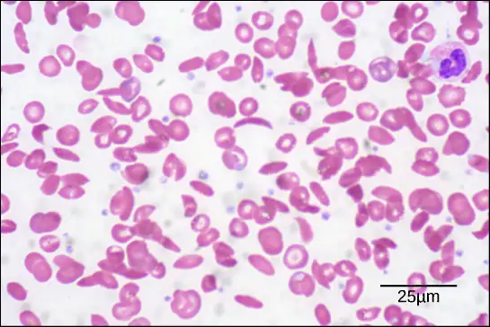
Secondary Structure¶
The local folding of the polypeptide in some regions gives rise to the secondary structure of the protein. The most common are the α-helix and β-pleated sheet structures (Figure 3.28). Both structures are held in shape by hydrogen bonds. The hydrogen bonds form between the oxygen atom in the carbonyl group in one amino acid and another amino acid that is four amino acids farther along the chain.
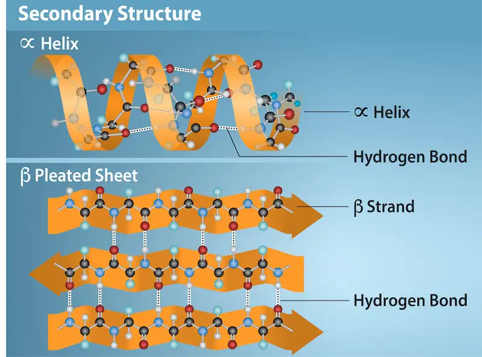
Every helical turn in an alpha helix has 3.6 amino acid residues. The polypeptide's R groups (the variant groups) protrude out from the α-helix chain. In the β-pleated sheet, hydrogen bonding between atoms on the polypeptide chain's backbone form the "pleats". The R groups are attached to the carbons and extend above and below the pleat's folds. The pleated segments align parallel or antiparallel to each other, and hydrogen bonds form between the partially positive hydrogen atom in the amino group and the partially negative oxygen atom in the peptide backbone's carbonyl group. The α-helix and β-pleated sheet structures are in most globular and fibrous proteins and they play an important structural role.
Tertiary Structure¶
The polypeptide's unique three-dimensional structure is its tertiary structure (Figure 3.29). This structure is in part due to chemical interactions at work on the polypeptide chain. Primarily, the interactions among R groups create the protein's complex three-dimensional tertiary structure. The nature of the R groups in the amino acids involved can counteract forming the hydrogen bonds we described for standard secondary structures. For example, R groups with like charges repel each other and those with unlike charges are attracted to each other (ionic bonds). When protein folding takes place, the nonpolar amino acids' hydrophobic R groups lie in the protein's interior; whereas, the hydrophilic R groups lie on the outside. Scientists also call the former interaction types hydrophobic interactions. Interaction between cysteine side chains forms disulfide linkages in the presence of oxygen, the only covalent bond that forms during protein folding.
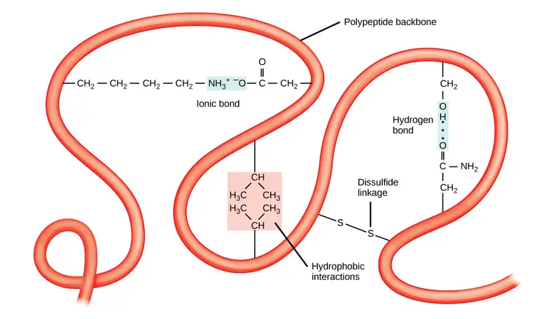
All of these interactions, weak and strong, determine the protein's final three-dimensional shape. When a protein loses its three-dimensional shape, it may no longer be functional.
Quaternary Structure¶
In nature, some proteins form from several polypeptides, or subunits, and the interaction of these subunits forms the quaternary structure. Weak interactions between the subunits help to stabilize the overall structure. For example, insulin (a globular protein) has a combination of hydrogen and disulfide bonds that cause it to mostly clump into a ball shape. Insulin starts out as a single polypeptide and loses some internal sequences in the presence of post-translational modification after forming the disulfide linkages that hold the remaining chains together. Silk (a fibrous protein), however, has a β-pleated sheet structure that is the result of hydrogen bonding between different chains.
Figure 3.30 illustrates the four levels of protein structure (primary, secondary, tertiary, and quaternary).
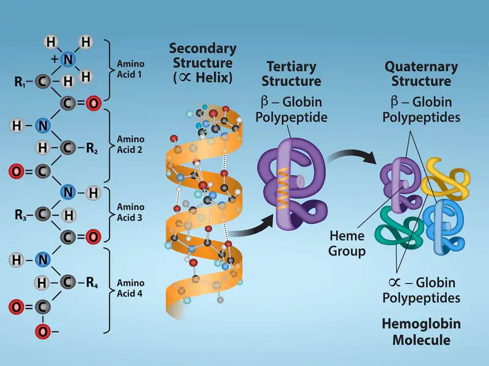
Denaturation and Protein Folding¶
Each protein has its own unique sequence and shape that chemical interactions hold together. If the protein is subject to changes in temperature, pH, or exposure to chemicals, the protein structure may change, losing its shape without losing its primary sequence in what scientists call denaturation. Denaturation is often reversible because the polypeptide's primary structure is conserved in the process if the denaturing agent is removed, allowing the protein to resume its function. Sometimes denaturation is irreversible, leading to loss of function. One example of irreversible protein denaturation is frying an egg. The albumin protein in the liquid egg white denatures when placed in a hot pan. Not all proteins denature at high temperatures. For instance, bacteria that survive in hot springs have proteins that function at temperatures close to boiling. The stomach is also very acidic, has a low pH, and denatures proteins as part of the digestion process; however, the stomach's digestive enzymes retain their activity under these conditions.
Protein folding is critical to its function. Scientists originally thought that the proteins themselves were responsible for the folding process. Only recently researchers discovered that often they receive assistance in the folding process from protein helpers, or chaperones (or chaperonins) that associate with the target protein during the folding process. They act by preventing polypeptide aggregation that comprise the complete protein structure, and they disassociate from the protein once the target protein is folded.
Interactive
For an additional perspective on proteins, view this animation called “Biomolecules: The Proteins.”
3.5 Nucleic Acids¶
Learning Objectives
By the end of this section, you will be able to do the following:
- Describe nucleic acids' structure and define the two types of nucleic acids
- Explain DNA's structure and role
- Explain RNA's structure and roles
Nucleic acids are the most important macromolecules for the continuity of life. They carry the cell's genetic blueprint and carry instructions for its functioning.
DNA and RNA¶
The two main types of nucleic acids are deoxyribonucleic acid (DNA) and ribonucleic acid (RNA). DNA is the genetic material in all living organisms, ranging from single-celled bacteria to multicellular mammals. It is in the nucleus of eukaryotes and in the organelles, chloroplasts, and mitochondria. In prokaryotes, the DNA is not enclosed in a membranous envelope.
The cell's entire genetic content is its genome, and the study of genomes is genomics. In eukaryotic cells but not in prokaryotes, DNA forms a complex with histone proteins to form chromatin, the substance of eukaryotic chromosomes. A chromosome may contain tens of thousands of genes. Many genes contain the information to make protein products. Other genes code for RNA products. DNA controls all of the cellular activities by turning the genes “on” or “off.”
The other type of nucleic acid, RNA, is mostly involved in protein synthesis. The DNA molecules never leave the nucleus but instead use an intermediary to communicate with the rest of the cell. This intermediary is the messenger RNA (mRNA). Other types of RNA—like rRNA, tRNA, and microRNA—are involved in protein synthesis and its regulation.
DNA and RNA are comprised of monomers that scientists call nucleotides. The nucleotides combine with each other to form a polynucleotide, DNA or RNA. Three components comprise each nucleotide: a nitrogenous base, a pentose (five-carbon) sugar, and a phosphate group (Figure 3.31). Each nitrogenous base in a nucleotide is attached to a sugar molecule, which is attached to one or more phosphate groups.
![The molecular structure of a nucleotide is shown. The core of the nucleotide is a pentose whose carbon residues are numbered one prime through five prime. The base is attached to the one prime carbon, and the phosphate is attached to the five prime carbon. Two kinds of pentose are found in nucleotides: ribose and deoxyribose. Deoxyribose has an H instead of O H at the two prime position. Five kinds of base are found in nucleotides. Two of these, adenine and guanine, are purine bases with two rings fused together. The other three, cytosine, thymine and uracil, have one six-membered ring.](img/figure-03-05-01-d787.webp)
The nitrogenous bases, important components of nucleotides, are organic molecules and are so named because they contain carbon and nitrogen. They are bases because they contain an amino group that has the potential of binding an extra hydrogen, and thus decreasing the hydrogen ion concentration in its environment, making it more basic. Each nucleotide in DNA contains one of four possible nitrogenous bases: adenine (A), guanine (G) cytosine (C), and thymine (T).
Scientists classify adenine and guanine as purines. The purine's primary structure is two carbon-nitrogen rings. Scientists classify cytosine, thymine, and uracil as pyrimidines which have a single carbon-nitrogen ring as their primary structure (Figure 3.31). Each of these basic carbon-nitrogen rings has different functional groups attached to it. In molecular biology shorthand, we know the nitrogenous bases by their symbols A, T, G, C, and U. DNA contains A, T, G, and C; whereas, RNA contains A, U, G, and C.
The pentose sugar in DNA is deoxyribose, and in RNA, the sugar is ribose (Figure 3.31). The difference between the sugars is the presence of the hydroxyl group on the ribose's second carbon and hydrogen on the deoxyribose's second carbon. The carbon atoms of the sugar molecule are numbered as 1′, 2′, 3′, 4′, and 5′ (1′ is read as “one prime”). The phosphate residue attaches to the hydroxyl group of the 5′ carbon of one sugar and the hydroxyl group of the 3′ carbon of the sugar of the next nucleotide, which forms a 5′–3′ phosphodiester linkage. A simple dehydration reaction like the other linkages connecting monomers in macromolecules does not form the phosphodiester linkage. Its formation involves removing two phosphate groups. A polynucleotide may have thousands of such phosphodiester linkages.
DNA Double-Helix Structure¶
DNA has a double-helix structure (Figure 3.32). The sugar and phosphate lie on the outside of the helix, forming the DNA's backbone. The nitrogenous bases are stacked in the interior, like a pair of staircase steps. Hydrogen bonds bind the pairs to each other. Every base pair in the double helix is separated from the next base pair by 0.34 nm. The helix's two strands run in opposite directions, meaning that the 5′ carbon end of one strand will face the 3′ carbon end of its matching strand. (Scientists call this an antiparallel orientation and is important to DNA replication and in many nucleic acid interactions.)
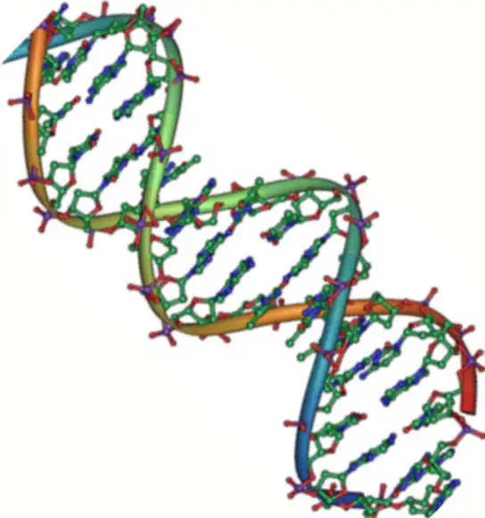
Only certain types of base pairing are allowed. For example, a certain purine can only pair with a certain pyrimidine. This means A can pair with T, and G can pair with C, as Figure 3.33 shows. This is the base complementary rule. In other words, the DNA strands are complementary to each other. If the sequence of one strand is AATTGGCC, the complementary strand would have the sequence TTAACCGG. During DNA replication, each strand copies itself, resulting in a daughter DNA double helix containing one parental DNA strand and a newly synthesized strand.
Visual Connection
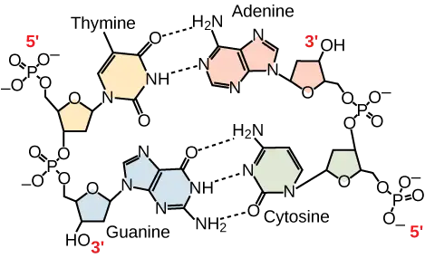
A mutation occurs, and adenine replaces cytosine. What impact do you think this will have on the DNA structure?
RNA¶
Ribonucleic acid, or RNA, is mainly involved in the process of protein synthesis under the direction of DNA. RNA is usually single-stranded and is comprised of ribonucleotides that are linked by phosphodiester bonds. A ribonucleotide in the RNA chain contains ribose (the pentose sugar), one of the four nitrogenous bases (A, U, G, and C), and the phosphate group.
There are four major types of RNA: messenger RNA (mRNA), ribosomal RNA (rRNA), transfer RNA (tRNA), and microRNA (miRNA). The first, mRNA, carries the message from DNA, which controls all of the cellular activities in a cell. If a cell requires synthesizing a certain protein, the gene for this product turns “on” and the messenger RNA synthesizes in the nucleus. The RNA base sequence is complementary to the DNA's coding sequence from which it has been copied. However, in RNA, the base T is absent and U is present instead. If the DNA strand has a sequence AATTGCGC, the sequence of the complementary RNA is UUAACGCG. In the cytoplasm, the mRNA interacts with ribosomes and other cellular machinery (Figure 3.34).
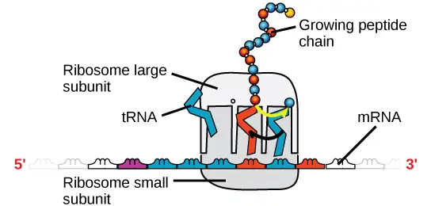
The mRNA is read in sets of three bases known as codons. Each codon codes for a single amino acid. In this way, the mRNA is read and the protein product is made. Ribosomal RNA (rRNA) is a major constituent of ribosomes on which the mRNA binds. The rRNA ensures the proper alignment of the mRNA and the Ribosomes. The ribosome's rRNA also has an enzymatic activity (peptidyl transferase) and catalyzes peptide bond formation between two aligned amino acids. Transfer RNA (tRNA) is one of the smallest of the four types of RNA, usually 70–90 nucleotides long. It carries the correct amino acid to the protein synthesis site. It is the base pairing between the tRNA and mRNA that allows for the correct amino acid to insert itself in the polypeptide chain. MicroRNAs are the smallest RNA molecules and their role involves regulating gene expression by interfering with the expression of certain mRNA messages. Table 3.2 summarizes DNA and RNA features.
Table 3.2
| DNA and RNA Features | ||
|---|---|---|
| DNA | RNA | |
| Function | Carries genetic information | Involved in protein synthesis |
| Location | Remains in the nucleus | Leaves the nucleus |
| Structure | Double helix | Usually single-stranded |
| Sugar | Deoxyribose | Ribose |
| Pyrimidines | Cytosine, thymine | Cytosine, uracil |
| Purines | Adenine, guanine | Adenine, guanine |
Even though the RNA is single stranded, most RNA types show extensive intramolecular base pairing between complementary sequences, creating a predictable three-dimensional structure essential for their function.
As you have learned, information flow in an organism takes place from DNA to RNA to protein. DNA dictates the structure of mRNA in a process scientists call transcription, and RNA dictates the protein's structure in a process scientists call translation. This is the Central Dogma of Life, which holds true for all organisms; however, exceptions to the rule occur in connection with viral infections.
Interactive
To learn more about DNA, explore the Howard Hughes Medical Institute BioInteractive animations on the topic of DNA.
Chapter Review¶
Key Terms¶
- alpha-helix structure (α-helix)
- type of secondary protein structure formed by folding the polypeptide into a helix shape with hydrogen bonds stabilizing the structure
- amino acid
- a protein's monomer; has a central carbon or alpha carbon to which an amino group, a carboxyl group, a hydrogen, and an R group or side chain is attached; the R group is different for all 20 common amino acids
- beta-pleated sheet (β-pleated)
- secondary structure in proteins in which hydrogen bonding forms “pleats” between atoms on the polypeptide chain's backbone
- biological macromolecule
- large molecule necessary for life that is built from smaller organic molecules
- carbohydrate
- biological macromolecule in which the ratio of carbon to hydrogen and to oxygen is 1:2:1; carbohydrates serve as energy sources and structural support in cells and form arthropods' cellular exoskeleton
- cellulose
- polysaccharide that comprises the plants' cell wall; provides structural support to the cell
- chaperone
- (also, chaperonin) protein that helps nascent protein in the folding process
- chitin
- type of carbohydrate that forms the outer skeleton of all arthropods that include crustaceans and insects; it also forms fungi cell walls
- dehydration synthesis
- (also, condensation) reaction that links monomer molecules, releasing a water molecule for each bond formed
- denaturation
- loss of shape in a protein as a result of changes in temperature, pH, or chemical exposure
- deoxyribonucleic acid (DNA)
- double-helical molecule that carries the cell's hereditary information
- disaccharide
- two sugar monomers that a glycosidic bond links
- enzyme
- catalyst in a biochemical reaction that is usually a complex or conjugated protein
- glycogen
- storage carbohydrate in animals
- glycosidic bond
- bond formed by a dehydration reaction between two monosaccharides with eliminating a water molecule
- hormone
- chemical signaling molecule, usually protein or steroid, secreted by endocrine cells that act to control or regulate specific physiological processes
- hydrolysis
- reaction that causes breakdown of larger molecules into smaller molecules by utilizing water
- lipid
- macromolecule that is nonpolar and insoluble in water
- messenger RNA (mRNA)
- RNA that carries information from DNA to ribosomes during protein synthesis
- monomer
- smallest unit of larger molecules that are polymers
- monosaccharide
- single unit or monomer of carbohydrates
- nucleic acid
- biological macromolecule that carries the cell's genetic blueprint and carries instructions for the cell's functioning
- nucleotide
- monomer of nucleic acids; contains a pentose sugar, one or more phosphate groups, and a nitrogenous base
- omega fat
- type of polyunsaturated fat that the body requires; numbering the carbon omega starts from the methyl end or the end that is farthest from the carboxylic end
- peptide bond
- bond formed between two amino acids by a dehydration reaction
- phosphodiester
- linkage covalent chemical bond that holds together the polynucleotide chains with a phosphate group linking neighboring nucleotides' two pentose sugars
- phospholipid
- membranes' major constituent; comprised of two fatty acids and a phosphate-containing group attached to a glycerol backbone
- polymer
- chain of monomer residues that covalent bonds link; polymerization is the process of polymer formation from monomers by condensation
- polynucleotide
- long chain of nucleotides
- polypeptide
- long chain of amino acids that peptide bonds link
- polysaccharide
- long chain of monosaccharides; may be branched or unbranched
- primary structure
- linear sequence of amino acids in a protein
- protein
- biological macromolecule comprised of one or more amino acid chains
- purine
- type of nitrogenous base in DNA and RNA; adenine and guanine are purines
- pyrimidine
- type of nitrogenous base in DNA and RNA; cytosine, thymine, and uracil are pyrimidines
- quaternary structure
- association of discrete polypeptide subunits in a protein
- ribonucleic acid (RNA)
- single-stranded, often internally base paired, molecule that is involved in protein synthesis
- ribosomal RNA (rRNA)
- RNA that ensures the proper alignment of the mRNA and the ribosomes during protein synthesis and catalyzes forming the peptide linkage
- saturated fatty acid
- long-chain hydrocarbon with single covalent bonds in the carbon chain; the number of hydrogen atoms attached to the carbon skeleton is maximized
- secondary structure
- regular structure that proteins form by intramolecular hydrogen bonding between the oxygen atom of one amino acid residue and the hydrogen attached to the nitrogen atom of another amino acid residue
- starch
- storage carbohydrate in plants
- steroid
- type of lipid comprised of four fused hydrocarbon rings forming a planar structure
- tertiary structure
- a protein's three-dimensional conformation, including interactions between secondary structural elements; formed from interactions between amino acid side chains
- trans fat
- fat formed artificially by hydrogenating oils, leading to a different arrangement of double bond(s) than those in naturally occurring lipids
- transcription
- process through which messenger RNA forms on a template of DNA
- transfer RNA (tRNA)
- RNA that carries activated amino acids to the site of protein synthesis on the ribosome
- translation
- process through which RNA directs the protein's formation
- triacylglycerol (also, triglyceride)
- fat molecule; consists of three fatty acids linked to a glycerol molecule
- unsaturated fatty acid
- long-chain hydrocarbon that has one or more double bonds in the hydrocarbon chain
- wax
- lipid comprised of a long-chain fatty acid that is esterified to a long-chain alcohol; serves as a protective coating on some feathers, aquatic mammal fur, and leaves
Summary¶
3.1 Synthesis of Biological Macromolecules¶
Proteins, carbohydrates, nucleic acids, and lipids are the four major classes of biological macromolecules—large molecules necessary for life that are built from smaller organic molecules. Macromolecules are comprised of single units scientists call monomers that are joined by covalent bonds to form larger polymers. The polymer is more than the sum of its parts: it acquires new characteristics, and leads to an osmotic pressure that is much lower than that formed by its ingredients. This is an important advantage in maintaining cellular osmotic conditions. A monomer joins with another monomer with water molecule release, leading to a covalent bond forming. Scientists call these dehydration or condensation reactions. When polymers break down into smaller units (monomers), they use a water molecule for each bond broken by these reactions. Such reactions are hydrolysis reactions. Dehydration and hydrolysis reactions are similar for all macromolecules, but each monomer and polymer reaction is specific to its class. Dehydration reactions typically require an investment of energy for new bond formation, while hydrolysis reactions typically release energy by breaking bonds.
3.2 Carbohydrates¶
Carbohydrates are a group of macromolecules that are a vital energy source for the cell and provide structural support to plant cells, fungi, and all of the arthropods that include lobsters, crabs, shrimp, insects, and spiders. Scientists classify carbohydrates as monosaccharides, disaccharides, and polysaccharides depending on the number of monomers in the molecule. Monosaccharides are linked by glycosidic bonds that form as a result of dehydration reactions, forming disaccharides and polysaccharides with eliminating a water molecule for each bond formed. Glucose, galactose, and fructose are common monosaccharides; whereas, common disaccharides include lactose, maltose, and sucrose. Starch and glycogen, examples of polysaccharides, are the storage forms of glucose in plants and animals, respectively. The long polysaccharide chains may be branched or unbranched. Cellulose is an example of an unbranched polysaccharide; whereas, amylopectin, a constituent of starch, is a highly branched molecule. Glucose storage, in the form of polymers like starch of glycogen, makes it slightly less accessible for metabolism; however, this prevents it from leaking out of the cell or creating a high osmotic pressure that could cause the cell to uptake excessive water.
3.3 Lipids¶
Lipids are a class of macromolecules that are nonpolar and hydrophobic in nature. Major types include fats and oils, waxes, phospholipids, and steroids. Fats are a stored form of energy and are also known as triacylglycerols or triglycerides. Fats are comprised of fatty acids and either glycerol or sphingosine. Fatty acids may be unsaturated or saturated, depending on the presence or absence of double bonds in the hydrocarbon chain. If only single bonds are present, they are saturated fatty acids. Unsaturated fatty acids may have one or more double bonds in the hydrocarbon chain. Phospholipids comprise the membrane's matrix. They have a glycerol or sphingosine backbone to which two fatty acid chains and a phosphate-containing group are attached. Steroids are another class of lipids. Their basic structure has four fused carbon rings. Cholesterol is a type of steroid and is an important constituent of the plasma membrane, where it helps to maintain the membrane's fluid nature. It is also the precursor of steroid hormones such as testosterone.
3.4 Proteins¶
Proteins are a class of macromolecules that perform a diverse range of functions for the cell. They help in metabolism by acting as enzymes, carriers, or hormones, and provide structural support. The building blocks of proteins (monomers) are amino acids. Each amino acid has a central carbon that bonds to an amino group, a carboxyl group, a hydrogen atom, and an R group or side chain. There are 20 commonly occurring amino acids, each of which differs in the R group. A peptide bond links each amino acid to its neighbors. A long amino acid chain is a polypeptide.
Proteins are organized at four levels: primary, secondary, tertiary, and (optional) quaternary. The primary structure is the amino acids' unique sequence. The polypeptide's local folding to form structures such as the α-helix and β-pleated sheet constitutes the secondary structure. The overall three-dimensional structure is the tertiary structure. When two or more polypeptides combine to form the complete protein structure, the configuration is the protein's quaternary structure. Protein shape and function are intricately linked. Any change in shape caused by changes in temperature or pH may lead to protein denaturation and a loss in function.
3.5 Nucleic Acids¶
Nucleic acids are molecules comprised of nucleotides that direct cellular activities such as cell division and protein synthesis. Pentose sugar, a nitrogenous base, and a phosphate group comprise each nucleotide. There are two types of nucleic acids: DNA and RNA. DNA carries the cell's genetic blueprint and passes it on from parents to offspring (in the form of chromosomes). It has a double-helical structure with the two strands running in opposite directions, connected by hydrogen bonds, and complementary to each other. RNA is a single-stranded polymer composed of linked nucleotides made up of a pentose sugar (ribose), a nitrogenous base, and a phosphate group. RNA is involved in protein synthesis and its regulation. Messenger RNA (mRNA) copies from the DNA, exports itself from the nucleus to the cytoplasm, and contains information for constructing proteins. Ribosomal RNA (rRNA) is a part of the ribosomes at the site of protein synthesis; whereas, transfer RNA (tRNA) carries the amino acid to the site of protein synthesis. The microRNA regulates using mRNA for protein synthesis.
Review Questions¶
3.1 Synthesis of Biological Macromolecules¶
1. Dehydration synthesis leads to formation of
- monomers
- polymers
- water and polymers
- none of the above
Answer
C
2. During the breakdown of polymers, which of the following reactions takes place?
- hydrolysis
- dehydration
- condensation
- covalent bond
Answer
A
3. The following chemical reactants produce the ester ethyl ethanoate (C4H8O2):
C2H6O + CH3COOH
What type of reaction occurs to make ethyl ethanoate?
- condensation
- hydrolysis
- combustion
- acid-base reaction
Answer
A
3.2 Carbohydrates¶
4. An example of a monosaccharide is ________.
- fructose
- glucose
- galactose
- all of the above
Answer
D
5. Cellulose and starch are examples of:
- monosaccharides
- disaccharides
- lipids
- polysaccharides
Answer
D
6. Plant cell walls contain which of the following in abundance?
- starch
- cellulose
- glycogen
- lactose
Answer
B
7. Lactose is a disaccharide formed by the formation of a ________ bond between glucose and ________.
- glycosidic; lactose
- glycosidic; galactose
- hydrogen; sucrose
- hydrogen; fructose
Answer
B
8. Which of the following is not an extracellular matrix role of carbohydrates?
- protect an insect’s internal organs from external trauma
- prevent plant cells from lysing after the plant is watered
- maintain the shape of a fungal spore
- provide energy for muscle movement
Answer
D
3.3 Lipids¶
9. Saturated fats have all of the following characteristics except:
- they are solid at room temperature
- they have single bonds within the carbon chain
- they are usually obtained from animal sources
- they tend to dissolve in water easily
Answer
D
10. Phospholipids are important components of ________.
- the plasma membrane of cells
- the ring structure of steroids
- the waxy covering on leaves
- the double bond in hydrocarbon chains
Answer
A
11. Cholesterol is an integral part of plasma membranes. Based on its structure, where is it found in the membrane?
- on the extracellular surface
- embedded with the phospholipid heads
- within the tail bilayer
- attached to the intracellular surface
Answer
C
3.4 Proteins¶
12. The monomers that make up proteins are called ________.
- nucleotides
- disaccharides
- amino acids
- chaperones
Answer
C
13. The α-helix and the β-pleated sheet are part of which protein structure?
- primary
- secondary
- tertiary
- quaternary
Answer
B
14. Mad cow disease is an infectious disease where one misfolded protein causes all other copies of the protein to begin misfolding. This is an example of a disease impacting ____ structure.
- primary
- secondary
- tertiary
- quaternary
Answer
C
3.5 Nucleic Acids¶
15. A nucleotide of DNA may contain ________.
- ribose, uracil, and a phosphate group
- deoxyribose, uracil, and a phosphate group
- deoxyribose, thymine, and a phosphate group
- ribose, thymine, and a phosphate group
Answer
C
16. The building blocks of nucleic acids are ________.
- sugars
- nitrogenous bases
- peptides
- nucleotides
Answer
D
17. How does the double helix structure of DNA support its role in encoding the genome?
- The sugar-phosphate backbone provides a template for DNA replication.
- tRNA pairing with the template strand creates proteins encoded by the genome.
- Complementary base pairing creates a very stable structure.
- Complementary base pairing allows for easy editing of both strands of DNA.
Answer
C
Critical Thinking Questions¶
3.1 Synthesis of Biological Macromolecules¶
18. Why are biological macromolecules considered organic?
Answer
Biological macromolecules are organic, meaning they contain carbon and are bound to hydrogen.
19. What role do electrons play in dehydration synthesis and hydrolysis?
Answer
In a dehydration synthesis reaction, the hydrogen of one monomer combines with the hydroxyl group of another monomer, releasing a molecule of water. This creates an opening in the outer shells of atoms in the monomers, which can share electrons and form covalent bonds.
20. Amino acids have the generic structure seen below, where R represents different carbon-based side chains.
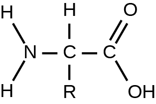
Describe how the structure of amino acids allows them to be linked into long peptide chains to form proteins.
Answer
Amino acids can be linked into long chains through condensation reactions. One of the hydrogen atoms bonded to the nitrogen atom of an amino acid reacts with the –OH group attached to the terminal carbon on another amino acid. Since both ends of the molecule can participate in condensation reactions, peptide bonds can be made in both directions to create a long amino acid chain.
3.2 Carbohydrates¶
21. Describe the similarities and differences between glycogen and starch.
Answer
Glycogen and starch are polysaccharides. They are the storage form of glucose. Glycogen is stored in animals in the liver and in muscle cells, whereas starch is stored in the roots, seeds, and leaves of plants. Starch has two different forms, one unbranched (amylose) and one branched (amylopectin), whereas glycogen is a single type of a highly branched molecule.
22. Why is it impossible for humans to digest food that contains cellulose?
Answer
The β 1-4 glycosidic linkage in cellulose cannot be broken down by human digestive enzymes. Herbivores such as cows, koalas, and buffalos are able to digest grass that is rich in cellulose and use it as a food source because bacteria and protists in their digestive systems, especially in the rumen, secrete the enzyme cellulase. Cellulases can break down cellulose into glucose monomers that can be used as an energy source by the animal.
23. Draw the ketose and aldose forms of a monosaccharide with the chemical formula C3H6O3. How is the structure of the monosaccharide changed from one form to the other in the human body?
Answer
The human body switches carbohydrates between their aldose and ketose forms using a family of enzymes called isomerases. The ketose triose is called dihydroxyacetone, and has the oxygen double-bonded to the center carbon:
The aldose is called glyceraldehyde, and can have the oxygen double-bonded to the first or third carbon of the molecule:
3.3 Lipids¶
24. Explain at least three functions that lipids serve in plants and/or animals.
Answer
Fat serves as a valuable way for animals to store energy. It can also provide insulation. Waxes can protect plant leaves and mammalian fur from getting wet. Phospholipids and steroids are important components of animal cell membranes, as well as plant, fungal, and bacterial membranes.
25. Why have trans fats been banned from some restaurants? How are they created?
Answer
Trans fats are created artificially when hydrogen gas is bubbled through oils to solidify them. The double bonds of the cis conformation in the hydrocarbon chain may be converted to double bonds in the trans configuration. Some restaurants are banning trans fats because they cause higher levels of LDL, or “bad”cholesterol.
26. Why are fatty acids better than glycogen for storing large amounts of chemical energy?
Answer
Fats have a higher energy density than carbohydrates (averaging 9kcal/gram versus 4.3kcal/gram respectively). Thus, on a per gram basis, more energy can be stored in fats than can be stored in carbohydrates. Additionally, fats are packaged into spherical globules to minimize interactions with the water-based plasma membrane, while glycogen is a large branched carbohydrate that cannot be compacted for storage.
27. Part of cortisol’s role in the body involves passing through the plasma membrane to initiate signaling inside a cell. Describe how the structures of cortisol and the plasma membrane allow this to occur.
Answer
Cortisol is a small, generally hydrophobic molecule, while the phospholipids that create plasma membranes have a hydrophilic head and hydrophobic tails. Since cortisol is hydrophobic, it can interact with the sequestered tails of the phospholipids in the center of the plasma membrane. This, along with its small size, allows cortisol to move through the plasma membrane to the inside of the cell.
3.4 Proteins¶
28. Explain what happens if even one amino acid is substituted for another in a polypeptide chain. Provide a specific example.
Answer
A change in gene sequence can lead to a different amino acid being added to a polypeptide chain instead of the normal one. This causes a change in protein structure and function. For example, in sickle cell anemia, the hemoglobin β chain has a single amino acid substitution—the amino acid glutamic acid in position six is substituted by valine. Because of this change, hemoglobin molecules form aggregates, and the disc-shaped red blood cells assume a crescent shape, which results in serious health problems.
29. Describe the differences in the four protein structures.
Answer
The sequence and number of amino acids in a polypeptide chain is its primary structure. The local folding of the polypeptide in some regions is the secondary structure of the protein. The three-dimensional structure of a polypeptide is known as its tertiary structure, created in part by chemical interactions such as hydrogen bonds between polar side chains, van der Waals interactions, disulfide linkages, and hydrophobic interactions. Some proteins are formed from multiple polypeptides, also known as subunits, and the interaction of these subunits forms the quaternary structure.
30. Aquaporins are proteins embedded in the plasma membrane that allow water molecules to move between the extracellular matrix and the intracellular space. Based on its function and location, describe the key features of the protein’s shape and the chemical characteristics of its amino acids.
Answer
The protein must form a channel in the plasma membrane that allows water into the cell since water cannot cross the plasma membrane by itself. Since aquaporins are embedded in the plasma membrane and connect with both the intracellular and extracellular spaces, it must be amphipathic like the plasma membrane. The top and bottom of the protein must contain charged or polar amino acids (hydrophilic) to interact with the aqueous environments. The exterior transmembrane region must contain non-polar amino acids (hydrophobic) that can interact with the phospholipid tails. However, the inside of this channel must contain hydrophilic amino acids since they will interact with the traveling water molecules.
3.5 Nucleic Acids¶
31. What are the structural differences between RNA and DNA?
Answer
DNA has a double-helix structure. The sugar and the phosphate are on the outside of the helix and the nitrogenous bases are in the interior. The monomers of DNA are nucleotides containing deoxyribose, one of the four nitrogenous bases (A, T, G and C), and a phosphate group. RNA is usually single-stranded and is made of ribonucleotides that are linked by phosphodiester linkages. A ribonucleotide contains ribose (the pentose sugar), one of the four nitrogenous bases (A,U, G, and C), and the phosphate group.
32. What are the four types of RNA and how do they function?
Answer
The four types of RNA are messenger RNA, ribosomal RNA, transfer RNA, and microRNA. Messenger RNA carries the information from the DNA that controls all cellular activities. The mRNA binds to the ribosomes that are constructed of proteins and rRNA, and tRNA transfers the correct amino acid to the site of protein synthesis. microRNA regulates the availability of mRNA for translation.
Visual Connection Questions¶
3.2 Carbohydrates¶
33. Figure 3.5 What kind of sugars are these, aldose or ketose?
Answer
Figure 3.5 Glucose and galactose are aldoses. Fructose is a ketose.
3.4 Proteins¶
34. Figure 3.23 Which categories of amino acid would you expect to find on the surface of a soluble protein, and which would you expect to find in the interior? What distribution of amino acids would you expect to find in a protein embedded in a lipid bilayer?
Answer
Figure 3.23 Polar and charged amino acid residues (the remainder after peptide bond formation) are more likely to be found on the surface of soluble proteins where they can interact with water, and nonpolar (e.g., amino acid side chains) are more likely to be found in the interior where they are sequestered from water. In membrane proteins, nonpolar and hydrophobic amino acid side chains associate with the hydrophobic tails of phospholipids, while polar and charged amino acid side chains interact with the polar head groups or with the aqueous solution. However, there are exceptions. Sometimes, positively and negatively charged amino acid side chains interact with one another in the interior of a protein, and polar or charged amino acid side chains that interact with a ligand can be found in the ligand binding pocket.
3.5 Nucleic Acids¶
35. Figure 3.33 A mutation occurs, and cytosine is replaced with adenine. What impact do you think this will have on the DNA structure?
Answer
Figure 3.33 Adenine is larger than cytosine and will not be able to base pair properly with the guanine on the opposing strand. This will cause the DNA to bulge. DNA repair enzymes may recognize the bulge and replace the incorrect nucleotide.
Adapted from Biology 2e by OpenStax, licensed under CC BY 4.0. Access the original for free at openstax.org. Changes: converted to the web reading format of The Open Book Project.